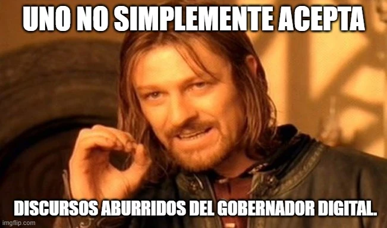

estrategIA #42 ·
El bostezo del gobierno digital
El contexto
El bostezo digital es un relato ficticio sobre un gobierno dirigido por una IA en 2045. Sus decisiones pueden ser eficientes, pero sus discursos aburren a los ciudadanos. El meme utiliza a Boromir, de El señor de los anillos, para protestar contra ese gobernante tan poco emocionante.
Publicado en: estrategIA #42: historias para el verano, Política en la era de la IA (2): El bostezo digital
Leer el texto de la imagen
UNO NO SIMPLEMENTE ACEPTA DISCURSOS ABURRIDOS DEL GOBERNADOR DIGITAL
Marca de la herramienta visible en el original: imgflip.com.